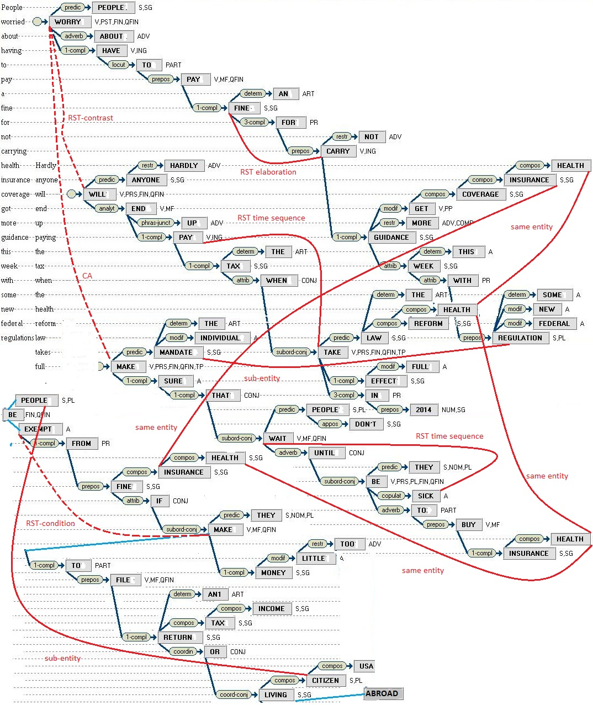
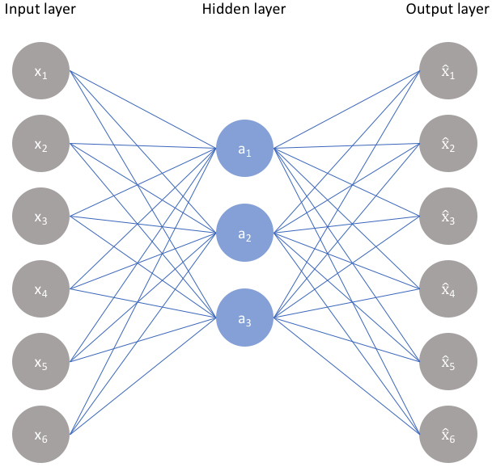

Finding research data is hard: scientists often don’t upload their data to the internet, and when they do it’s hard to search for, and there are dozens of places to look. At The Collaboratory, we’re building a universal research data platform, and along the way facing philosophical challenges that require new kinds of engineering solutions.
In the 60s, Marvin Minsky assigned a couple of undergrads to spend the summer programming a computer to use a camera to identify objects in a scene. He figured they’d have the problem solved by the end of the summer. Half a century later, we’re still working on it.
- xkcd 1425: “Tasks” alt text
It’s hard to write a program to identify pictures of birds, because birds do not exist. Like a Platonic solid, the idea of a perfect “bird” has no dual in reality. Unlike Platonic solids, though, we cannot even define what a bird is - the moment we try we run into a million philosophical questions of taxonomy. Because we cannot really define what a bird is, a simple, human understandable program to detect one is a hopeless challenge. Like the Supreme Court’s infamously noncommittal criteria for classifying obscenity of “I know it when I see it”, human-defined categories elude specification, and require a new approach to engineering solutions.
With recent advances in natural language processing (NLP) and machine understanding, we’ll discuss how these problems are solved today, and how they can be used to build better search engines.
The problem of computational understanding of concepts shows up in everyday life most frequently through search: Google a question, and you’ll more than likely receive an answer. How do such systems work?
Traditional search algorithms measure and rank relevancy using a key assumption: documents containing terms found in a search query are more likely to be relevant to the query than documents not containing those terms. So, to give a relevancy ranking to a document, we can simply compute how often a search query term is found in the document (and give a bonus if those words are rarely found in other documents). This way of relevancy ranking for search is nicely captured in the tf-idf (term frequency - inverse document frequency) score:
\[\text{tf-idf} = \frac{f_{t,d}}{ \text{max}\{f_{t',d}:t' \in d \}}\times\log\frac{N}{| \{ d \in D:t \in d\}|}\] where \[ \begin{aligned} f_{t,d} &= \text{the frequency of term}\,t\,\text{in document}\,d\\ D &= \text{the set of documents}\\ N &= |D|\text{, the number of documents in the corpus}\\ \end{aligned} \]
Using something as simple as tf-idf, you get pretty far - whatever shortcomings there may be are mitigated by users adapting to the system and developing their “google-fu”, searching for combinations of words that are likely to appear in the document they want, but unlikely to appear in other unrelated documents.
However, this approach has problems: Consider searching for the term “flora”: it could be that the document they were searching for instead contained the word “vegetation”. While these words represent extremely similar concepts, their literal character-based representation as words don’t match, so the system won’t recommend it. “Okay”, you think, “well we’ll just add all the known synonyms of a word and swap them out. And if we detect ‘not’ before a word we’ll search instead for the antonyms! And we’ll build up syntax graphs, and grammatical hierarchies and…”
 A Parse Thicket
You’ve just gone down the feature engineering path. It’s admirable, and some damn impressive tools have been built this way with great effort. However, systems like these take a huge amount of time to design, tend to be brittle and domain-limited, require continuous carefully crafted updates as the target language expands and new concepts are added, and won’t generalize to other languages.
Issues like these plague existing scientific search tools: take the famous AdS/CFT correspondence in physics - it says that a certain kind of quantum field theory (CFT) is closely related to gravitation in a particular regime (AdS). If we were hand-designing a physics search engine, we’d now have to find a way to make every search for a CFT also bring up AdS results. This is a never-ending nightmare of new features that requires understanding and staying on top of the literature. It’s infeasible, and cannot scale to a universal platform.
Considering problems of these kinds led us to ask, “can we do better?”
Instead of trying to encode every scrap of explicit knowledge and structure we can think of into a system, can we build a system that learns for itself how best to represent concepts?
This was the questions on the minds of researchers in 2013, when the seminal word2vec paper was published. They created a basic system of this kind in a remarkably simple way:
Consider encoding a word into a vector that represents the word’s place in the dictionary. For example, say there are 100,000 words in the English language, and “apple” is the first word alphabetically, then the dictionary vector for “apple” would be a 1 in the first place, followed by a zero everywhere else: \[\text{apple} = [1,0,0,0,...]\] Now if “zebra” were the final word in the language, we would represent it like: \[\text{zebra} = [0,0,0,...,1]\]
and so on for the rest of the words in between. Now, take as a linguistic hypothesis the following: words that appear near each other in human-written text often carry related meaning. For example, the word “apple” will probably appear near the words “pie”,“tree”, and “fruit” much more often than it will appear near the word “chair”. If we can build a system that outputs “pie” when it’s fed “apple”, or outputs “ocean” when it’s fed “fish”, it must have learned at least at a superficial level how concepts are related.
With this linguistic hypothesis, we can train a neural network to take words as input, and get related words as output (e.g., if we input the dictionary vector for “apple”, we’d like the network to output dictionary vectors for “tree” and “fruit”).
In practice, we can build a single hidden layer neural network that accepts a 100,000 dimension vector, learns a transformation to some intermediate hidden representation (which we’ll force to be much smaller in size, say 1,000 dimensions), and then another transformation back to 100,000 dimensions, which will represent another dictionary vector:
 A single hidden layer neural network
By training this network on millions of examples of nearby words sourced from text, the word2vec authors found that the intermediate, hidden representation in the network is forced to encode general semantic information about concepts learned from text. In other words, the network learns to encode what humans would call the “meaning” of the input.
In one remarkable result, the word2vec authors showed that the hidden representation of “king”, minus the hidden representation of “man”, plus the hidden representation of “woman” equaled… the hidden representation of “queen”! The network wasn’t taught this relationship explicitly, instead it learned to embed these words into a semantic space, where related concepts were mapped near to each other as a side effect of the training procedure!
 An example semantic embedding of concepts into vector space, showing only two dimensions1. The x-dimension seems to encode a notion of formality, while the y-dimension seems to encode a notion of gender.
An example semantic embedding of concepts into vector space, showing only two dimensions1. The x-dimension seems to encode a notion of formality, while the y-dimension seems to encode a notion of gender.
Using semantic vectors like these, we can make progress towards making our concept search better. Now even if a user wants to search for “flora” but a text uses the word “vegetation”, it’s no matter! Those two words’ semantic vectors will be nearby each other in semantic vector space. By comparing these vectors, we can rank concepts by similarity of meaning, and get around the brittle term-based problems with classical search methods.
NLP has come a long way from 2013. Since the Transformer revolution2, neural language models have been able to capture ever more subtle properties in their embeddings, such as: \[ R(\text{not apple}) = - R(\text{apple})\] where \(R(\cdot)\) is the representation learned by the network. Now language models can embed sentences3, and even whole documents4, rendering obsolete most of the utility of individual word-level embeddings.
The latest neural language models no longer predict words related to their input, rather they can continue a sentence from any point5, fill in missing phrases6, and are now writing documents at a middle/high-school level7.
While universal language embeddings are incredibly useful, purpose-built models can still outperform them for particular domains. In The Collaboratory’s case, we need models that understand specialized scientific content - which is not something models like BERT, which are trained mostly on news and general internet articles, excel at. In the last year there has been enormous progress in building language models which understand scientific content, in particular Sci-TLDR8, a model which creates extremely abridged abstractive summaries of scientific documents, and SPECTER9, a scientific document-level embedder trained using a citation graph (The Collaboratory ❤️ AI2).
Neural language models are actively revolutionizing how we organize natural text - even Google has recently added BERT semantic features to their search10 - a serious sign of maturation of the technology.
At The Collaboratory, we want to make searching through scientific literature, and finding, sharing and collaborating with research data vastly more efficient. To do that, we’re building the next generation of semantic search and working to aggregate and organize all scientific data under one roof. If you’re excited to work with us to solve these problems, we’d love to hear from you!
Sentence-BERT: Sentence Embeddings using Siamese BERT-Networks↩︎
BERT: Pre-training of Deep Bidirectional Transformers for Language Understanding↩︎
On GPT-3: Meta-Learning, Scaling, Implications, And Deep Theory↩︎
SPECTER: Document-level Representation Learning using Citation-informed Transformers↩︎